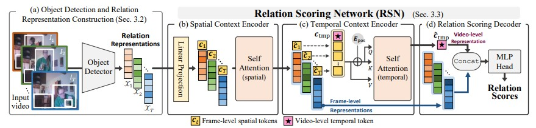
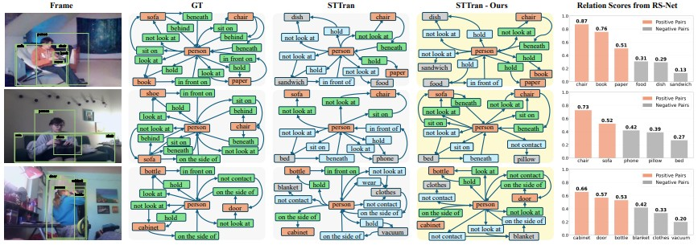
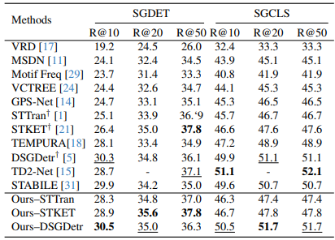
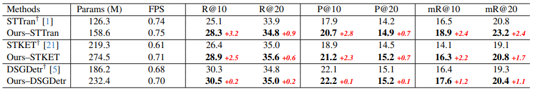

Abstract
existing methods are trained only on annotated object pairs and lack guidance for non-related pairs, making it difficult to identify meaningful relations during inference. In this paper, we propose Relation Scoring Network (RS-Net), a modular framework that scores the contextual importance of object pairs using both spatial interactions and long-range temporal context. RS-Net consists of a spatial context encoder with learnable context tokens and a temporal encoder that aggregates video-level information. The resulting relation scores are integrated into a unified triplet scoring mechanism to enhance relation prediction. RS-Net can be easily integrated into existing DSGG models without architectural changes. Experiments on the Action Genome dataset show that RS-Net consistently improves both Recall and Precision across diverse baselines, with notable gains in mean Recall, highlighting its ability to address the long-tailed distribution of relations. Furthermore, our qualitative analysis demonstrates that the contextually refined scene graphs from RS-Net serve as an effective semantic prior in downstream applications such as video captioning, guiding Large Multimodal Models (LMMs) to focus on salient actions. Despite the increased number of parameters, RS-Net maintains competitive efficiency, achieving superior performance over state-of-the-art methods
Overall Framework

Overview of the proposed RS-Net. The framework consists of four main components: (a) object detection and relation representation construction, (b) spatial context encoder, (c) temporal context encoder, and (d) relation scoring decoder. RS-Net is trained to distinguish semantically meaningful relations from irrelevant ones by incorporating both spatial and temporal cues. The resulting scores are used to guide predicate classification and triplet score computation during scene graph generation.
Key Contributions
- RS-Net enables relation scoring that integrates with existing frameworks without changes.
- Our scoring uses spatial and temporal context tokens to assess each object pair.
- It scores relation importance using spatial and long-range temporal context cues.
- RS-Net can serve as a relation prior for LMMs’ downstream video understanding tasks.
Qualitative Results

Figure. Qualitative comparisons between STTran and STTran with our RS-Net.
Quantitative Results

Table 1. Performance comparison on the Action Genome dataset.

Table 2. Performance comparison with computational efficiency metrics in the SGDET task.
BibTeX
@article{jo2026rs,
title={RS-Net: Context-Aware Relation Scoring for Dynamic Scene Graph Generation},
author={Jo, Hae-Won and Cho, Yeong-Jun},
journal={Pattern Recognition},
pages={113352},
year={2026},
publisher={Elsevier}
}